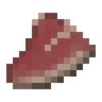

Сире м'ясо мінотавра
Сире м'ясо мінотавра — це надзвичайно поширена їжа, яку можна знайти лише в Лабіринті. М'ясо можна з'їсти сирим або приготувати з нього стейк. Його можна отримати вбивши Мінотавра (з них після смерті випадає від 0 до 1 м'яса). Сире м'ясо мінотавра відновлює гравцеві лише мізерні 2 одиниці голоду та 1,2 одиниці насичення.
- Відновлює очок голоду: 2
- Можна приготувати: так
- Складається: так (64)
- Відновлюваний: так
- ID: twilightforest:raw_meef

Якщо гравець з'їсть всі види їжі з Сутінкового лісу, то отримає досягнення "Обід на вічному заході сонця".